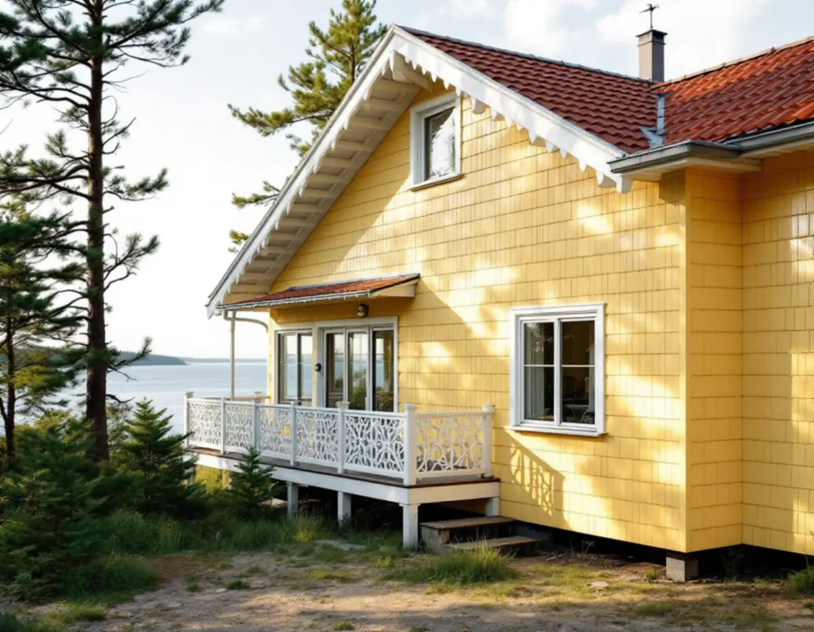
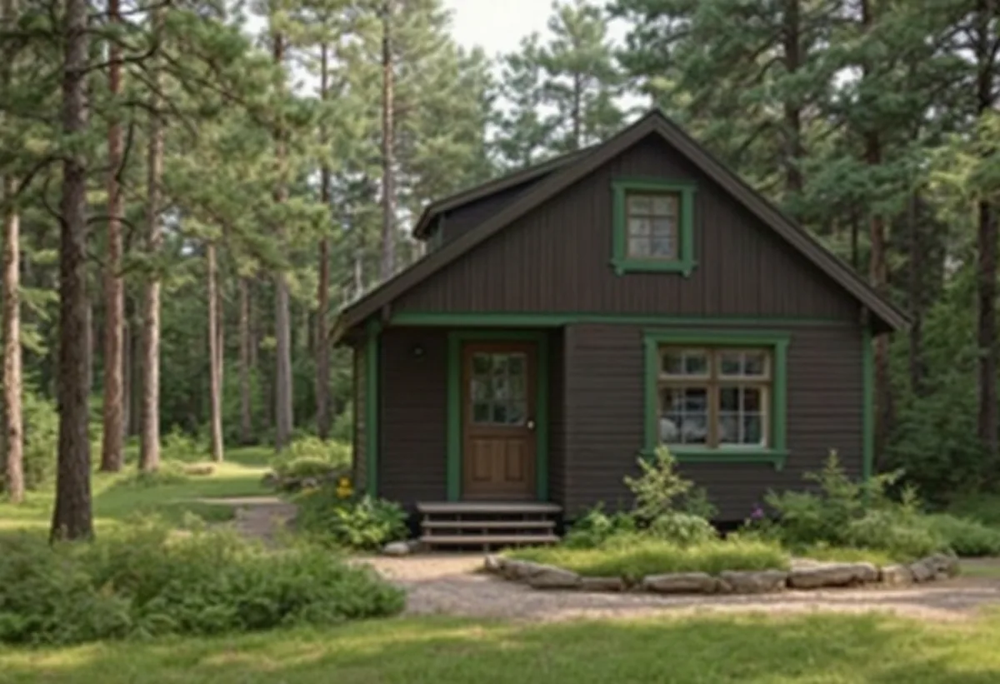
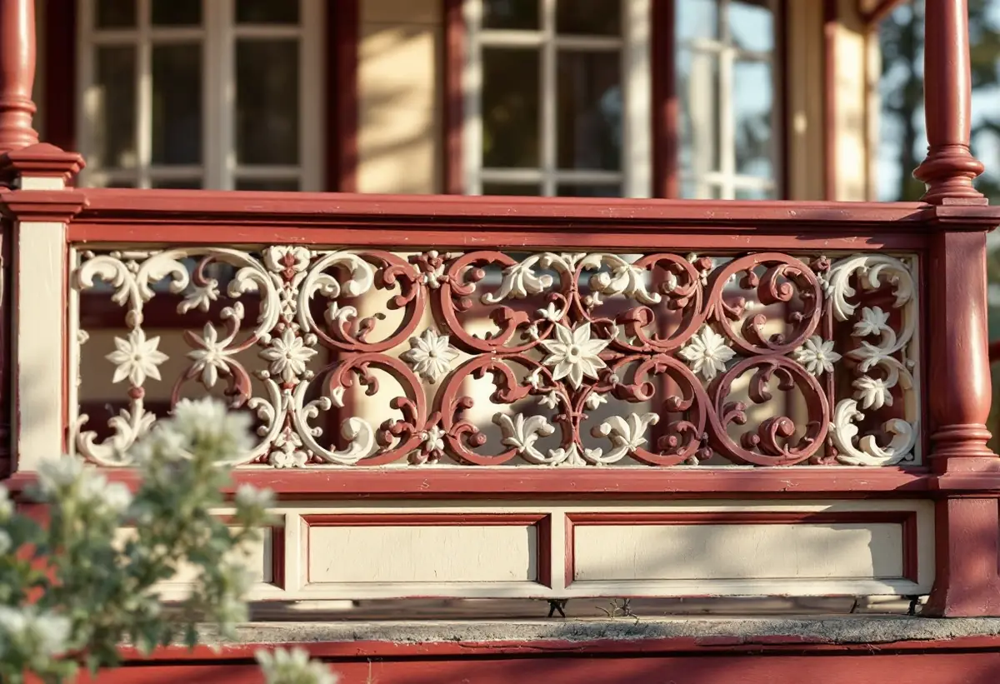

Kartan
Österåkerskartan och detaljplanen kontrolleras för fastigheten.

Sommarvillorna i Svinninge målades med linoljefärg i bruna, gula, grå och beige toner, och snickerierna i kontrasterande färger.
Beskriv jobbet kort.
Något blev fel. Kontrollera uppgifterna eller ring 08 12 410 276.
Vi tittar på jobbet på plats innan du får offert.
Du ser vad som ingår och vad det kostar.
Vi drar av ROT direkt och sköter ansökan.
Geal Entreprenad AB, Bromma. Org.nr 559303-7566.

Kommunens riktlinjer för området beskriver både de gamla kulörerna och vad nya hus bör målas med. Geal Entreprenad AB målar om fasader på villor och fritidshus i Österåker och utgår från riktlinjerna när kulören väljs.
Österåkers kommuns skrift Råd och vägledning för byggande i Svinninge beskriver det strandnära området Svinningeudd och Nantes som kommunens äldsta och bäst bevarade sommarhusbebyggelse. Där står också att de flesta tomterna har en storlek som överstiger 1 500 kvadratmeter och ger mycket luft mellan husen.
Skriften beskriver brokigheten som en stor tillgång, men en som måste hanteras varsamt för att området inte ska uppfattas som osammanhängande. En fasad i fel kulör eller färgtyp är ett av de sätt som helheten kan brytas på.

Enligt riktlinjerna är de flesta sommarvillorna i Svinningeudd och Nantes klädda med liggande hyvlad fasspontpanel som ursprungligen målades med linoljefärg. Sommarvillorna från sekelskiftet hade en rik färgskala, och bruna, gula, grå och beiga nyanser var vanliga på fasaden, medan fönsterfoder och listverk ofta fick färger som avvek från byggnadskroppen.
Sportstugorna beskrivs med mörkt bruna fasader och gröna snickerier, men också med faluröda fasader och vita snickerier. Vid en ommålning tar vi reda på vilken grupp huset hör till och vilken kulör det hade, innan vi föreslår färgsättning.
För ny bebyggelse skriver riktlinjerna att fasadmaterialet i huvudsak bör vara trä målat i ljusa kulörer med oljefärg eller Falu rödfärg, alternativt andra slamfärgskulörer, och att alternativa material prövas i bygglov. Det rådet är också en bra utgångspunkt när en tillbyggnad ska målas i samma veva som huset.
Riksantikvarieämbetet beskriver slamfärg som billig, fuktgenomsläpplig och den i särklass mest underhållsvänliga färgtypen, där det bara är att borsta och måla om. Men myndigheten påpekar också att den som en gång har bytt till en annan färgtyp, till exempel latex, alkyd eller linoljefärg, inte kan gå tillbaka till slamfärg ens om den befintliga färgen tas bort.
Österåkers kommun skriver att du behöver söka bygglov om fastigheten ligger inom ett kulturhistoriskt särskilt värdefullt område eller om byggnaden är särskilt värdefull, och nämner bland annat att ändra fasaden och att underhålla. Kommunen uppmanar dig att kontakta bygglovenheten innan arbetet påbörjas och hänvisar till Österåkerskartan för att se om fastigheten ligger i ett kulturmiljöområde.
Kommunen ger också några frågor för att bedöma om ett hus kan vara värdefullt, bland annat om det har bevarade byggnadsdetaljer som fönster och fasadmaterial. Vi går igenom kartan innan arbetet planeras. Om fasadmaterial och skärgårdshus i kommunen kan du läsa under fasadrenovering i Österåker.
Riksantikvarieämbetet anger att linoljefärg ska strykas tunt i flera skikt, att trä inte får ha högre fuktkvot än omkring 15 procent och att maj till augusti är bästa målningsperioden. Direkt solsken bör undvikas, och det är bäst att följa solens gång och stryka fasader som redan varit solbelysta.
En rätt sammansatt och påförd linoljefärg har enligt myndigheten lång livslängd, men utsatta delar som fönstersnickerier, vindskivor och sydfasader behöver målas oftare. Om måleri i Österåker i övrigt kan du läsa under målare i Österåker.
Österåkerskartan och detaljplanen kontrolleras för fastigheten.
Panel, snickerier och nuvarande färgtyp går vi igenom.
Kulörer för fasad och snickerier föreslås utifrån husets tid.
Fasader och snickerier redovisas för sig.
Tvätt, skrapning, bättring och tunna strykningar.
Vi går igenom resultatet och lämnar uppgift om färgtypen.
Utvändig målning av ett småhus som du äger och bor i räknas som rotarbete hos Skatteverket. Avdraget gäller arbetskostnaden, inte färgen. Det gäller även fritidshus som du äger.
Avdraget är högst 30 procent av arbetskostnaden, högst 50 000 kronor per person och år och högst 75 000 kronor tillsammans med rutavdrag. Material och resor ger inget avdrag. Geal drar avdraget direkt på fakturan.
Fasadernas yta, panelens skick, snickerier och lövsågerier, färgtyp, antal kulörer och ställning i kuperad terräng. Efter ett gratis platsbesök får du ett skriftligt kostnadsförslag.
Fasad, fönster och invändig målning.
Målare i Stockholm →Takbyte, takbesiktning och plåtarbeten.
Takläggare i Österåker →Svinninge, sommarvillor och sportstugor.
Takrenovering i Österåker →Uthyrning, kulturmiljö och fornlämningar.
Attefallshus i Österåker →VA-utbyggnad, öar och vattensmarta val.
Badrumsrenovering i Österåker →Rivning, markarbete och gatukostnader.
Byggföretag i Österåker →Skärgårdshus, fritidshus och villor i Österåker.
Fasadrenovering i Österåker →Varsamhet, kulturvärden och kustlägen i Österåker.
Fönsterbyte i Österåker →Sommarvillorna i Svinninge.
Fönsterrenovering i Österåker →Jämna golv och färre trösklar.
Golvläggare i Österåker →Golv i sommarhus som blivit bostad.
Golvslipning i Österåker →Helårshus, brunn och avlopp.
Köksrenovering i Österåker →Sommarvillor, röda stugor och efterkrigsvillor.
Målare i Österåker →Plåtdetaljer på sommarvillorna.
Plåtslagare i Österåker →Bryggor, altaner och äldre snickerier.
Snickare i Österåker →Lertegel, lovfrågan och återbruk av pannor.
Takbyte i Österåker →Sommarvillan blir åretruntbostad.
Tapetsering i Österåker →Grannmedgivande, strandskydd och utstakning.
Tillbyggnad i Österåker →Fritidshuset, värmen och anmälan.
Totalrenovering i Österåker →Eller ring 08 12 410 276, mån–fre 08–17.
Beskriv jobbet kort.
Något blev fel. Kontrollera uppgifterna eller ring 08 12 410 276.